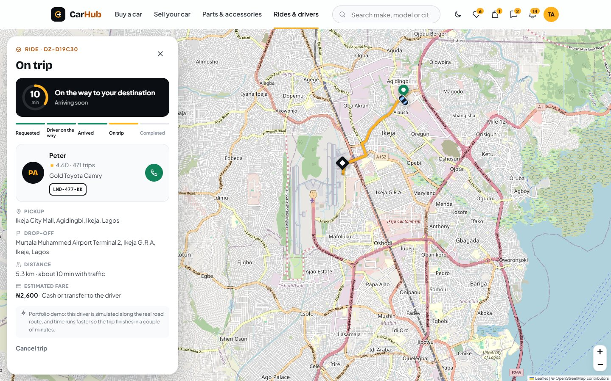

01The problem
Buying a car online in Nigeria usually means scrolling through unverified listings, then wiring money to a stranger. Nobody pays fifty million naira by card for a car they haven’t seen. So CarHub follows how a car sale really happens.
NoteThis is a portfolio project. No real vehicles are sold, and the demo data resets on every deploy.
“Every step has a real status, notification and email behind it, from the deposit through to the sale.”— from the project README
02The solution
Every listing is reviewed before it goes live, and every price is compared with the market. A buyer reserves with a refundable ₦250,000 deposit, which takes the car off the market. The seller confirms an inspection slot. The buyer inspects with their own mechanic, then pays the balance or cancels for a refund.
03The hardest problems
Two buyers, one car. Two people can press “Pay” for the same car in the same second. Checkout locks the car rows inside a transaction and checks they’re still available, so the second buyer is told the car has just gone. Nobody is charged for a car that’s already taken.
with transaction.atomic():
# Lock the rows so two buyers can't reserve the same car at once.
locked = list(Car.objects.select_for_update().filter(
pk__in=[c.pk for c in cars], status='available'))
if len(locked) != len(cars):
messages.error(request, 'One of the cars was just reserved by someone else.')
return redirect('cars:cart')Push a nudge, not the data. Live trips, chat and notifications run over WebSockets. A broadcast only says “this trip changed”. Each screen rebuilds its own view with the same permission checks as the normal pages, and only after the database has committed.
def trip_changed(trip):
"""A trip's status, driver or the driver's position changed."""
_send(f'trip_{trip.number}', 'trip.update')
if trip.driver_id:
_send(f'driver_{trip.driver_id}', 'driver.update')
_send('ops', 'ops.update')FallbackIf the socket drops, the page reconnects with backoff and falls back to polling, so tracking never stops.


FIG.03 Live trip tracking on desktop, and the phone layout.
04Testing and quality
| Area | What the tests prove |
|---|---|
| checkout | Exact totals, the locked email, and a car reserved by someone else mid-checkout |
| payments | Webhook signatures; an order is paid only after Paystack verifies the amount |
| accounts | One-time codes never appear in the subject line or inbox preview |
| realtime | Live updates reach the rider; strangers are refused; the ops feed is staff-only |
146 automated tests · GitHub Actions on Python 3.12 and 3.13
05Try it
Open the live demo
Render’s free tier: the first visit can take about 30 seconds to wake. One-click demo accounts for a buyer, a dealer, a parts vendor, a driver and a moderator.